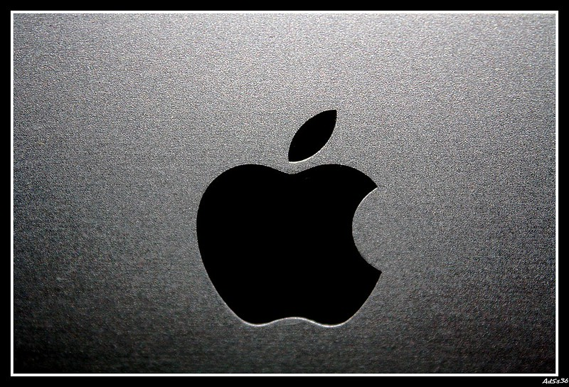
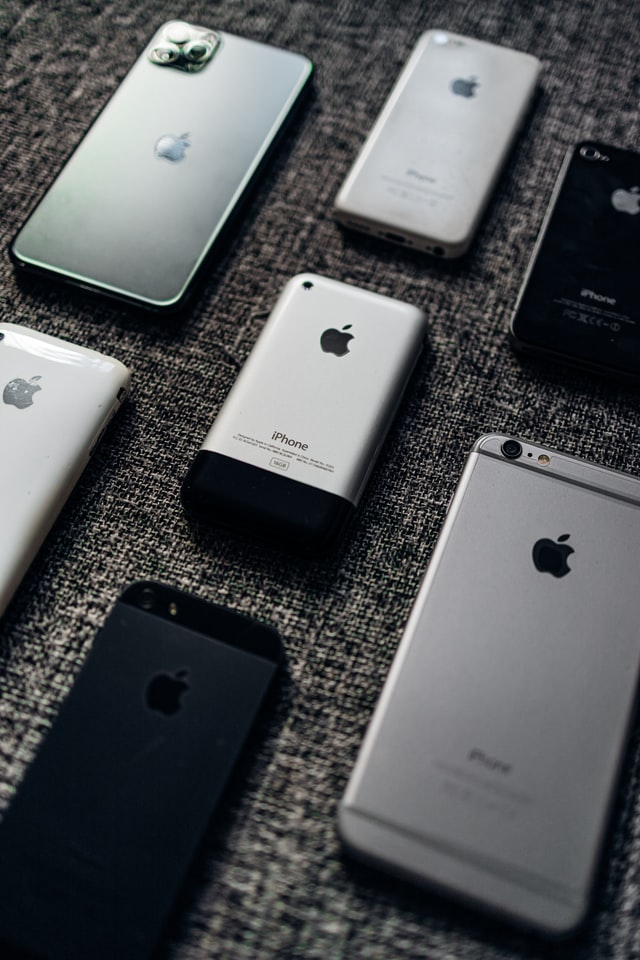

The main achievements of Steve Jobs
Steve was called a genius engineer, a great innovator, a talented manager.Among his achievements are technologies, without which we can not imagine our life today.Perhaps the departure of a single person from the IT sphere did not cause such a flow of regrets from both ordinary people and Steve’s colleagues in the market.Among the achievements of the founder of Apple — the device, ideas, technology.
Here are his most important achievements:
Apple:
Apple — this is the most important achievement of Steve. At the moment it is the most expensive company in the world, with the largest capitalization, over $ 731 billion and the most expensive brand in the world. These achievements of Apple and Steve Jobs are personally valuable doubly, if we recall that in the late 1990s, things went wrong with Apple. The company was unprofitable and lost more than 50% in value. The return of Jobs to the company literally saved her. Thanks to Steve in the 2000s, Apple released a number of flagship products — the iPod, later the iPhone, without forgetting the computers of the Mac line.
Pixar:
After being fired from Apple, Steve Jobs bought in 1986 a company from its founder, George Lucas, and turned it into a leader among companies that shoot animated films. For four main products — “Toy Story,” “Flick Adventures,” “Monsters Corporation,” and “In Search of Nemo,” Pixar’s studio raised $ 2.5 billion. This made the company the most successful animation studio. Pixar is also known for its developments in the field of three-dimensional graphics.
Apple II and Macintosh
Steve Jobs, along with Steve Wozniak, were the creators of the first popular PCs. The Apple II computer was released in 1977, the company managed to sell 5 million such devices. The Macintosh series — Mac-computers, which appeared in 1984, is still the flagship product of the company, which has been increasing in popularity especially since the introduction of new devices of this line.
iPhone
IPhone is Apple, Apple is iPhone. With this statement, I think, many will agree. It was the appearance of the flagship device — the touch-enabled smartphone iPhone — that made Apple the company known not only to technographers or long-time fans of Apple. Now the iPhone is the most popular smartphone.
Music in your pocket: iPod, iTunes
Just as the appearance of the iPhone changed the idea of smartphones, the iPod’s output changed the look at the music players. The device, which appeared in 2001, became the market leader, the company sold more than 250 million players and still controls about 80% of the market. The appearance of the online music store iTunes analysts called the rescue of the music industry. Jobs figured out how to get users to pay for music with minimal effort.
App Store
Another ingenious invention of Steve, more than a convenient tool for accessing applications for iOS devices. This is evidenced by bare numbers — at the beginning of the year the store overcame the mark of 10 billion downloadable applications.
iPad
A few years ago, few could have thought that users would choose something other than computers and laptops. However, this is exactly what happened after launching the tablet iPad.PC manufacturers began to compete literally in the Tablet race.For the first three months, Apple sold more tablets than competitors for the entire 2009 combined. Apple is still the undisputed leader of this market with its iPad